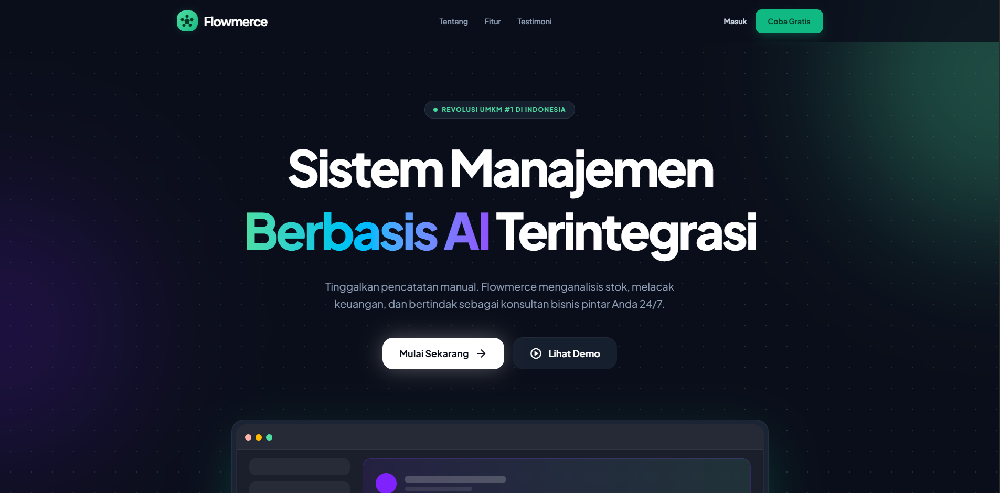

Point of Sale
Product selection, cart totals, and checkout with recorded orders and items.
Connecting everyday retail operations in one workspace.
A Laravel-based business management project exploring how a small retail team can work with sales, inventory, finances, employees, and table-based ordering within one connected system.

01 / The Problem
Small retailers often need several steps to record a sale, update stock quantities, and keep financial records aligned. As those processes grow apart, maintaining consistent information becomes harder.
Flowmerce explores how these connected tasks can live in one business workspace. The emphasis is on the links between the workflows, not just on building individual screens.
02 / Key Functionality
Product selection, cart totals, and checkout with recorded orders and items.
Product records, available quantities, inventory movements, and low-stock visibility.
Income and expense entries connected with business reporting and sales activity.
Distinct admin and cashier workspaces protected by role-based routes.
An interface for table management and QR-related ordering workflows.
A conversational workspace for questions about business operations.
03 / Engineering
The POS checkout flow is the clearest example of the architecture. The application groups the related database changes inside a transaction, locks stock rows before updating them, and checks whether quantities are sufficient.
Save the order, its totals, and purchased items.
Lock product rows and reject insufficient quantities.
Reduce stock and write inventory movement logs.
Create the financial entry and invalidate cached dashboard stats.
The checkout flow is implemented in a Laravel Livewire component.
04 / Interface Gallery
05 / Engineering Reflections
This project demonstrates a connected checkout and inventory flow, but a convincing production-grade system also needs stronger automated coverage of edge cases. The immediate priorities are testing insufficient stock, parallel checkouts, role boundaries, and financial totals.
I would also document a reproducible local demo environment, use fictional sample data, and add continuous integration checks. These are planned improvements rather than claims of completed testing.
Portfolio status: the code is publicly available for review. This case study does not claim production deployment, active business users, or verified performance metrics.
Read the code, review the technical notes, or explore more full-stack projects from my portfolio.